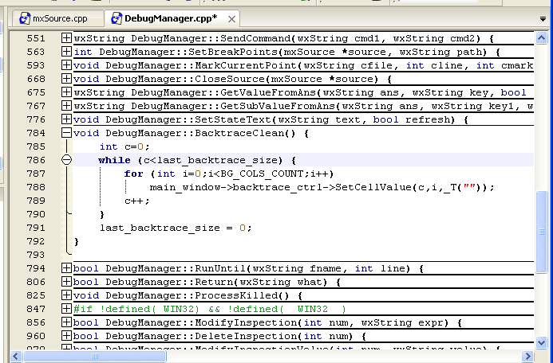

Plegado de Código
El plegado de código consiste en la posibilidad de ocultar o mostrar un bloque lógico de código mediante un click en el márgen izquierdo. Esto es, cuando se muestra un código se muestran en el márgen iconos con los símbolos mas (+) en las líneas donde comienza un bloque de código en el fuente (donde comienza una función, un bucle, una clase, etc). Estos bloques se identifican mediante la presencia de llaves ( { } ). Cuando el usuario hace click sobre este icono, el bloque correspondiente (es decir, desde es línea, hasta la línea en la que se cierre la llave correspondiente) se oculta, quedando visible sólo la primer línea de código y una linea divisoria indicando la acción del plegado. Para volver a mostrar el código basta con hacer click nuevamente en el márgen.

Los distintos niveles de plegado se anidan de la misma forma en que se anidan los bloques de código. Puede utilizar los comandos del submenú Plegado del menú Ver para mostrar u ocultar todos los bloques correspondientes a un mismo nivel en una sola acción. Por ejemplo, en un archivo en el que se definieron multiples funciones, puede utilizar Ctrl+1 (acceso rápido para Plegar el primer nivel) para ocultarlas todas dejando visible sólo sus prototipos. Si lo que se quieren plegar son los métodos definidos en una clase, probablemente la llave de la clase esté en el primer nivel, por lo que el atajo Ctrl+2 ocultaría todas las definiciones de dichos métodos. Para volver a mostrar todos los bloques de un nivel, los atajos correspondientes son Alt+N donde N es el número de nivel. Para mostrar u ocultar todos los niveles juntos utilice Alt+0 y Ctrl+0. Notar que si se intenta ocultar un nivel mientras el cursor de edición se encuentra en un bloque de ese nivel u otro más interno, ese bloque en particular no se plegará.